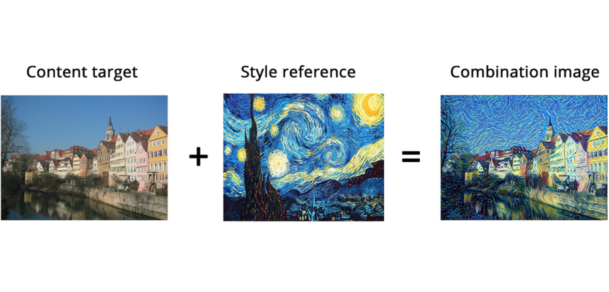
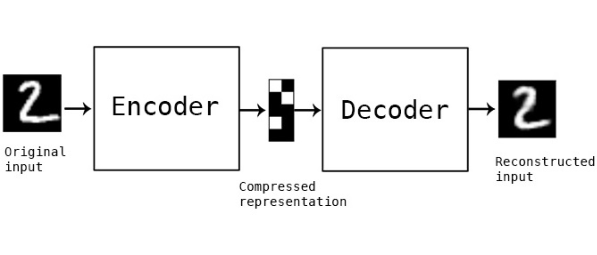
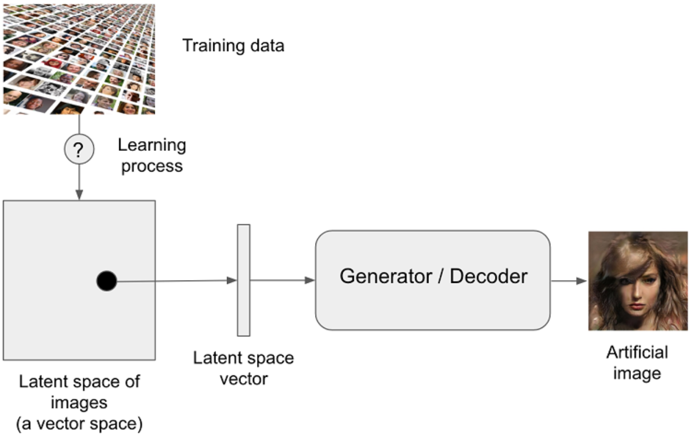
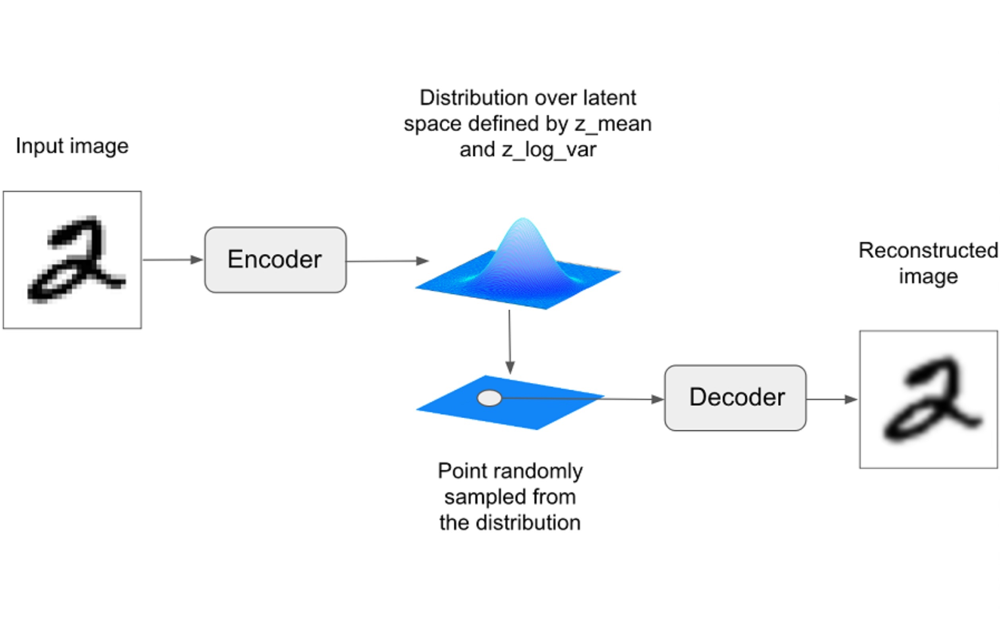
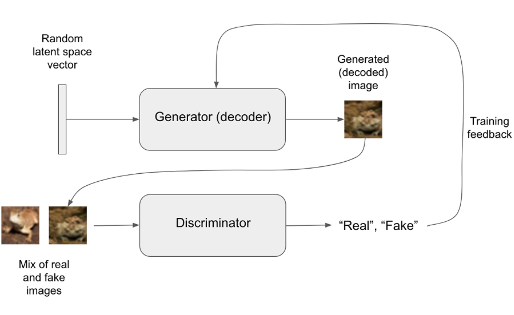

1. Deep Dream
2. Style Transfer

loss =
distance(style(reference_image) - style(generated_image)) +
distance(content(original_image) - content(generated_image))
3. Variational Auto Encoders



4. Generative Adversarial Networks

Status Quo?
Projects - Discussions
------
Teams, ideas, questions...
Projects - Options
------
- Share work Front-End / Backend (API) / Training (Dataset + model)
- Model Build from scratch / Use existing implementation(s) / Use transfer learning
- Dataset Use existing one / Build your own
- Frontend Choose your language / Use a web framework
- Usage Concrete task / Design / Music / etc...
Credits
- Photosunsplash.com
- DiagramsDeep Learning With Python by François Chollet